1 What is econometrics?
2 Basic mathematical tools
3 Stats fundamentals
4 Stats fundamentals II
5 Simple regression
6 OLS properties & fit
7 Flavors of OLS & OVB Quiz
8 Causality
9 Regression inference
10 Inference, continued PS due 16 Oct
11 Diagnostics
12 Measurement error & IRL
13 Revision
\hat{u}_i = y_i - \hat{y}_i
Plot the residuals against the fitted values \hat{y}_i
What we want to see: pure noise
On the next slide: 4 residual plots
Tick every plot whose residuals look like pure noise
https://emiliatjernstrom.com/econ2041/portal.html
A: unequal residual variance
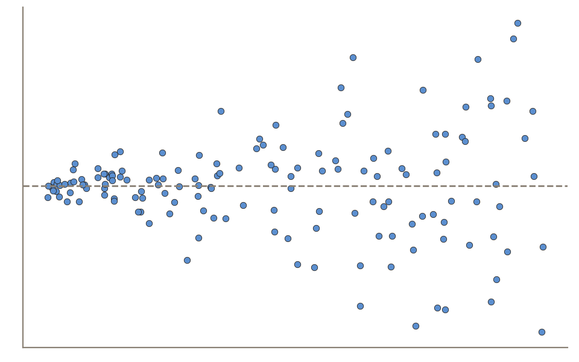
C: a curved pattern
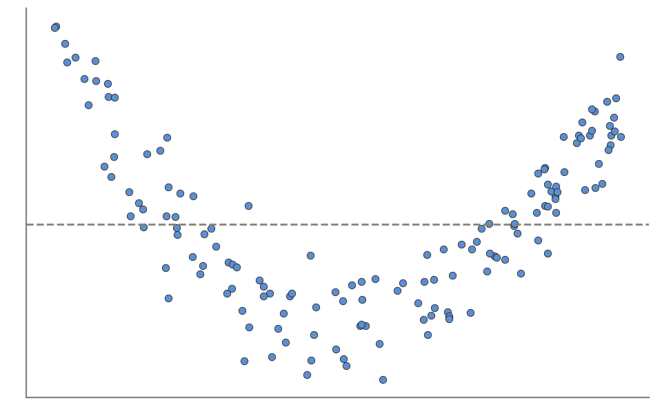
B: pure noise
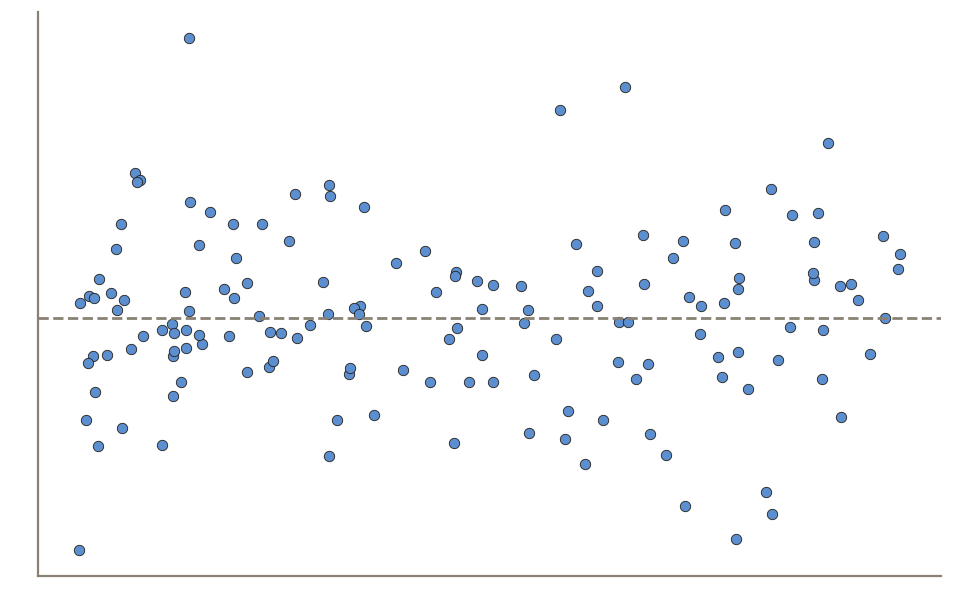
D: pure noise
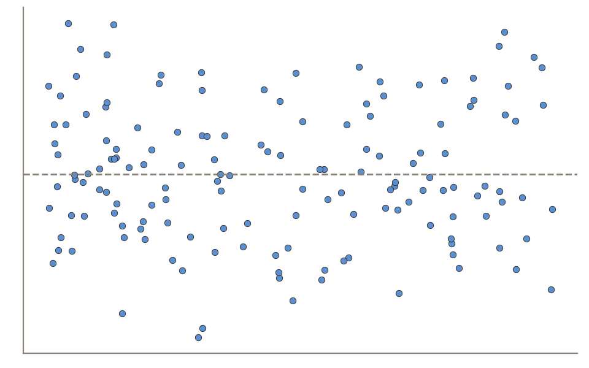
Vote on the portal: https://emiliatjernstrom.com/econ2041/portal.html
\widehat{\text{happiness}} = 4.75 + 0.03 \times \text{GDP per capita (\$1,000s)}
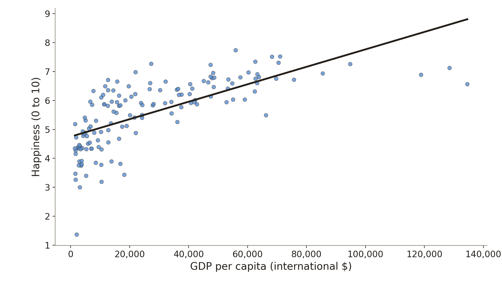
Data: Gallup World Poll & World Bank, via Our World in Data; 144 countries, 2024
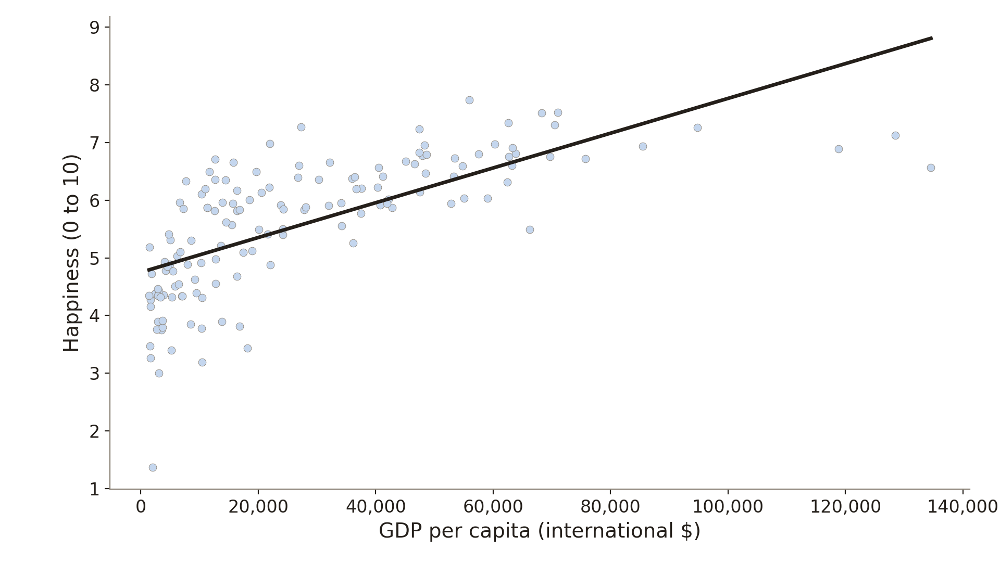
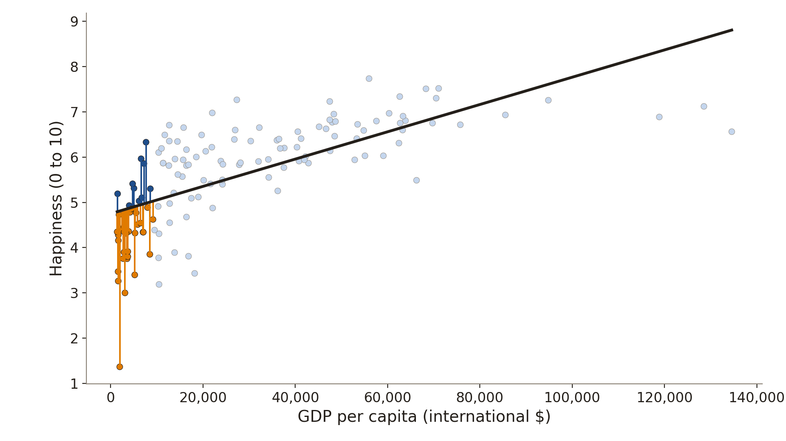
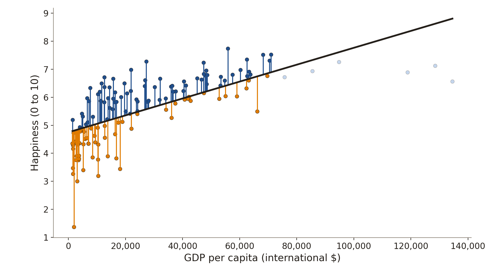
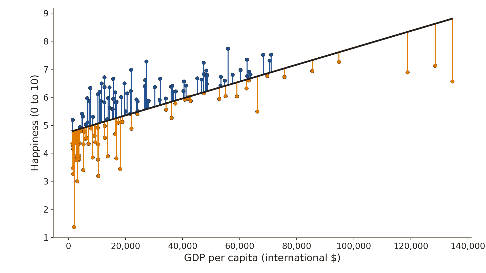
Data: Gallup World Poll & World Bank, via Our World in Data; 144 countries, 2024
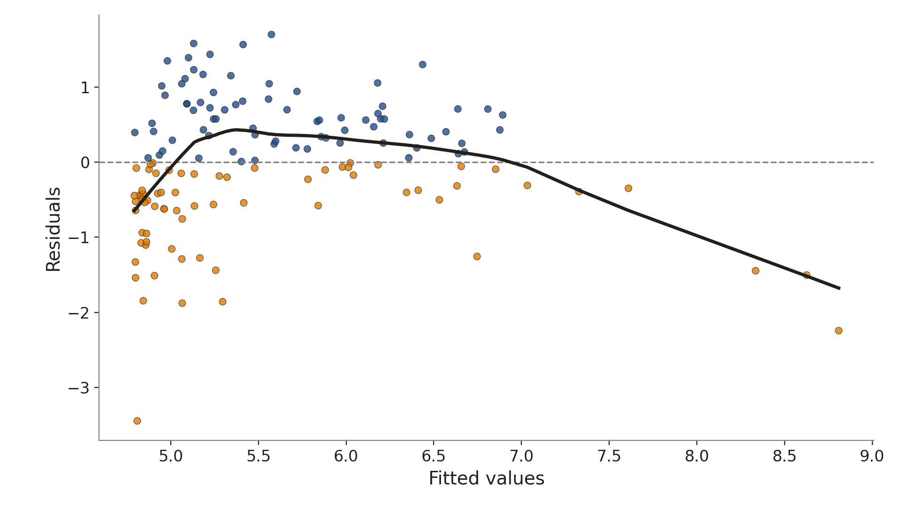
Data: Gallup World Poll & World Bank, via Our World in Data; 144 countries, 2024
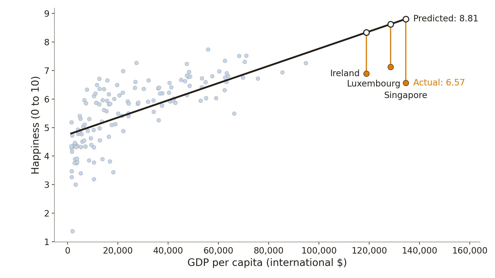
Data: Gallup World Poll & World Bank, via Our World in Data; 144 countries, 2024
from statsmodels.stats.diagnostic import linear_reset
model = ols("happiness ~ gdp_k", data=happy).fit()
linear_reset(model, power=3, use_f=True)<F test: F=25.21835447783917, p=4.430122822451849e-10, df_denom=140, df_num=2>p is below 0.1, so we reject the null that the coefficients on the squared and cubed fitted values are both 0
Data: Gallup World Poll & World Bank, via Our World in Data; 144 countries, 2024
\widehat{\text{happiness}} = -2.23 + 0.81 \times \log(\text{GDP per capita})
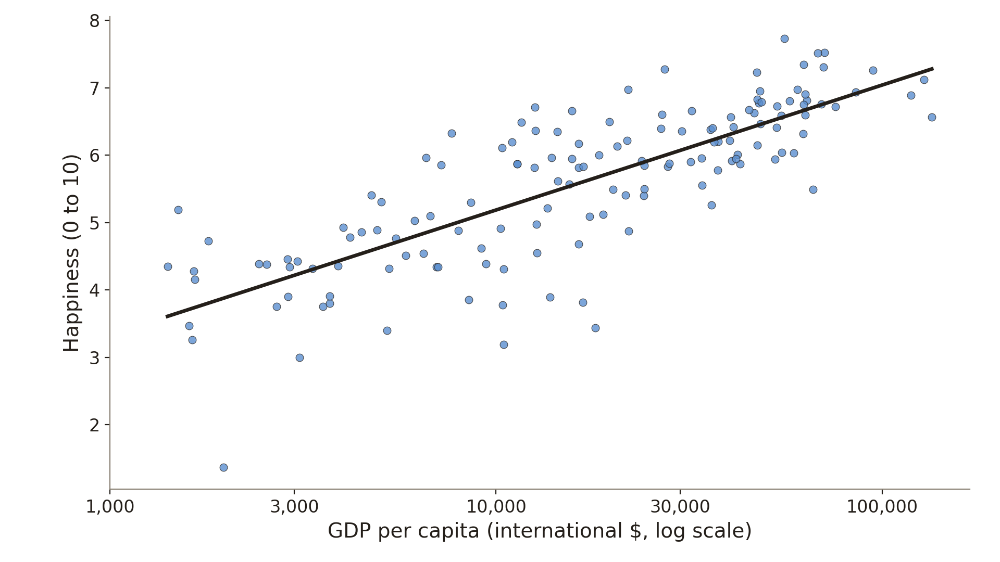
Data: Gallup World Poll & World Bank, via Our World in Data; 144 countries, 2024
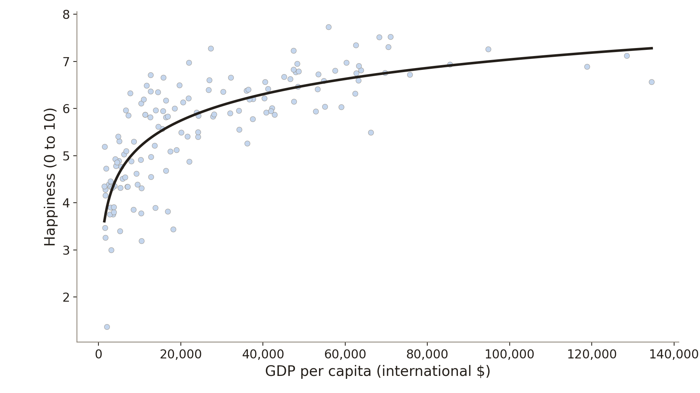
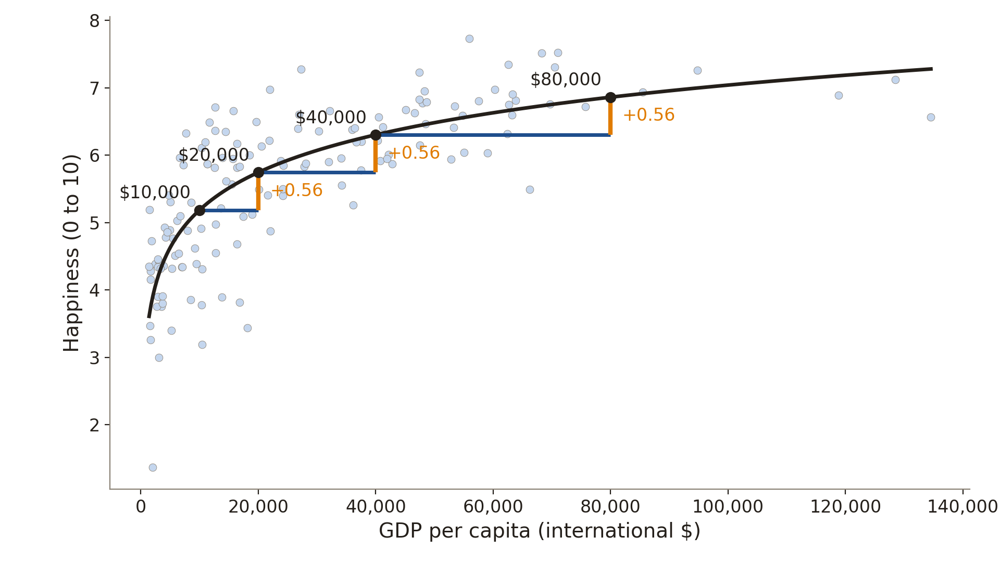
Data: Gallup World Poll & World Bank, via Our World in Data; 144 countries, 2024
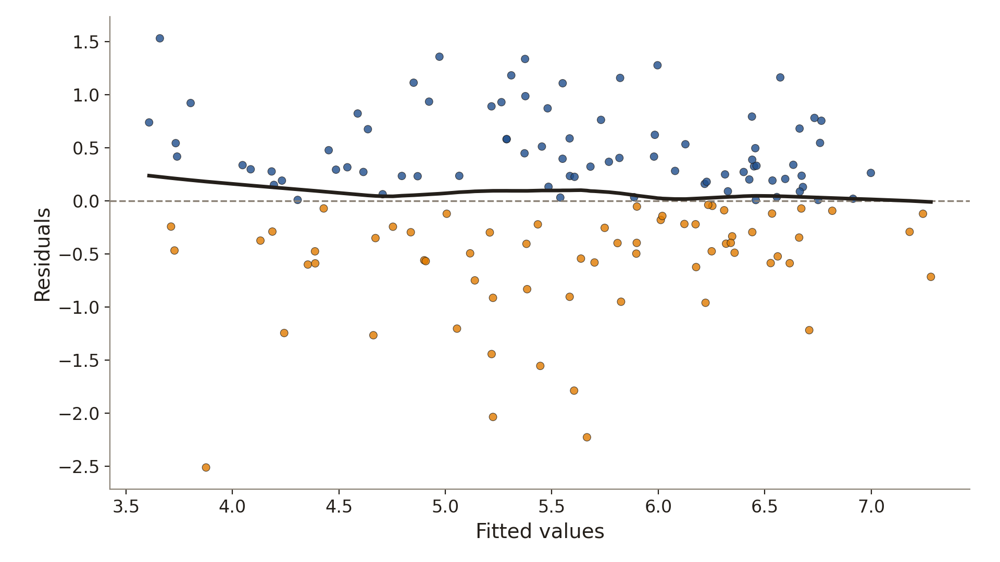
RESET: F = 0.76, p = 0.47
Data: Gallup World Poll & World Bank, via Our World in Data; 144 countries, 2024
\widehat{\text{price}} = 92.89 + 155.01 \times \text{bedrooms}
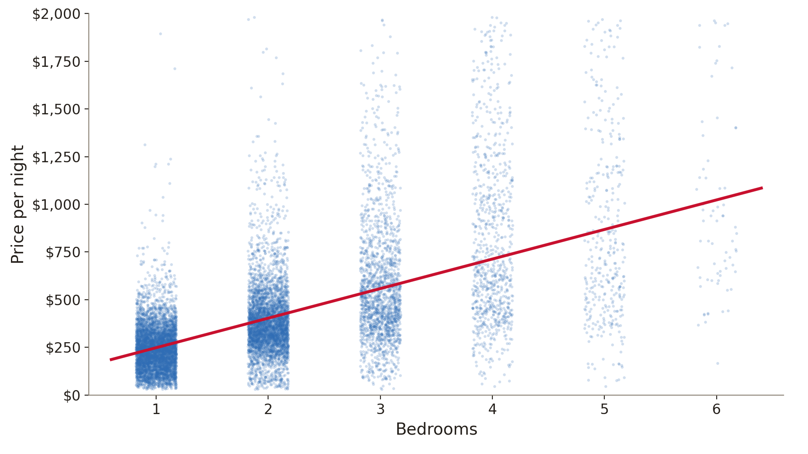
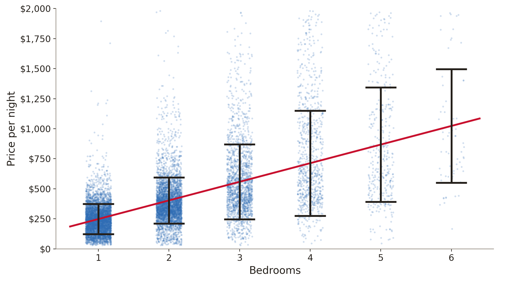
Data: Inside Airbnb, Sydney, snapshot of 16 June 2026; 12,419 listings; the 99.8% with up to 6 bedrooms are shown
from statsmodels.stats.diagnostic import het_breuschpagan
model = ols("price ~ bedrooms", data=airbnb).fit()
bp = het_breuschpagan(model.resid, model.model.exog)
print("LM statistic:", round(bp[0], 1))
print("p-value:", round(bp[1], 4))LM statistic: 1769.0
p-value: 0.0p is below 0.1, so we reject the null of homoskedasticity
Data: Inside Airbnb, Sydney, snapshot of 16 June 2026; 12,419 listings
OLS is still unbiased: unbiasedness needs the error to have a mean of 0 given X, and heteroskedasticity is about its variance
The usual standard error formula assumes the same error variance for every observation
With heteroskedasticity, the usual standard errors are biased, so the t-statistics, p-values, and confidence intervals based on them are invalid
fit()| Usual | Robust | |
|---|---|---|
| Coefficient on bedrooms | 155.01 | 155.01 |
| Standard error | 1.85 | 3.66 |
| 95% confidence interval | 151.4 to 158.6 | 147.8 to 162.2 |
Data: Inside Airbnb, Sydney, snapshot of 16 June 2026; 12,419 listings
If the errors are homoskedastic, then usual and robust standard errors are both valid (robust ones in large samples)
If the errors are heteroskedastic, then only robust standard errors are valid, and only in large samples
A curved pattern: try a log or a square of X, then run RESET again
Residual variance that differs across fitted values: report robust standard errors
No pattern: no evidence of either problem